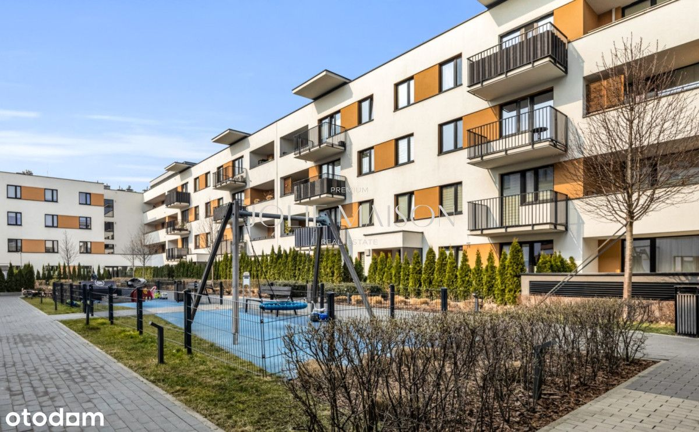
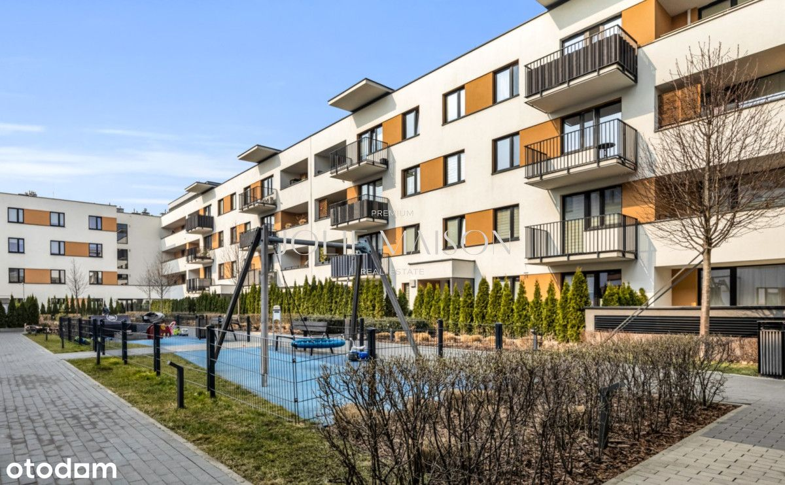

Na sprzedaż mieszkanie 3 pokojowe z 2 łazienkami o powierzchni 72 m2 zlokalizowane na 2 piętrze budynku z 2018 r. znajdujące się na warszawskim osiedlu Wilno, oddalone zaledwie 20 min od Stacji Metro Świętokrzyska. Wygodna komunikacja z centrum, w tym własna stacja kolejowa, liczne miejsca do rekreacji oraz bogata oferta handlowo-usługowa sprawiają, że jest to w pełni funkcjonalna przestrzeń do życia.
**O NIERUCHOMOŚCI
Mieszkanie urządzone z dbałością o detale. Na prawie całej powierzchni znajduje się olejowana deska jesionowa, w łazienkach gres oraz ogrzewanie podłogowe, a w sypialniach bardzo zadbane, antyalergiczne wykładziny. Drewniane drzwi wewnętrzne, listwy przypodłogowe i kuchnia wykonana przez stolarza. Blat roboczy, to olejowany jesion. Sprzęty takich marek jak Bosch (zmywarka), Samsung (lodówka), Smeg (okap), Amica (piekarnik), Elektrolux (szeroka płyta grzewcza). Salon wyposażony jest w zabudowę z drewnianymi półkami i wydzielonym miejscem do pracy. Ustawne sypialnie posiadają pojemne szafy. Na balkonie wysokiej jakości sztuczna trawa, miękka i łatwa w utrzymaniu czystości.
** ROZKŁAD MIESZKANIA
- Salon z otwartą kuchnią z oknem, (31 m²),
- Sypialnia główna, (11.5 m²),
- Sypialnia dziecięca, (12.7 m²),
- Łazienka z wanną i prysznicem, (4.6 m²),
- Garderoba, (2.25 m²),
- Toaleta z mini pralnią, (2.25m²),
- Przedpokój, (7,3 m²),
- Loggia, (9 m²).
** LOKALIZACJA
Mieszkanie znajduje się na osiedlu Wilno, na warszawskim Targówku.
W zaledwie 5 minut pieszo dojdziemy do stacji kolejowej, czy przystanku autobusowego. Liczne sklepy, restauracje, punkty usługowe i placówki edukacyjne działające na osiedlu, bliskość centrów handlowych (CH Wileńska, Atrium Targówek, M1, IKEA w Markach)
Osiedle Wilno jest bardzo dobrze skomunikowane z innymi częściami miasta:
- 4 minuty do stacji metra Dworzec Wileński, dzięki własnej stacji kolejowej i linii autobusowej, gwarantującej wygodną komunikację z centrum miasta.
- 15-minutowy dojazd do stacji metra Świętokrzyska.
- Bliskość ul. Radzymińskiej umożliwiającej wygodne poruszanie się po mieście.
- 4 km do trasy S8, która pozwala na łatwy wyjazd z Warszawy
** INFORMACJE DODATKOWE
Mieszkanie znajduje się na zamkniętym monitorowanym osiedlu.
Do mieszkania przynależy pojemny box, pełniący funkcję komórki lokatorskiej oraz miejsce postojowe w garażu podziemnym dodatkowo płatne 60 000 zł.
Istnieje możliwość podnajmu dodatkowego miejsca parkingowego.
Okolica, to zielone przestrzenie wspólne, umożliwiające rekreację i integrację mieszkańców
niska, kameralna zabudowa, pełna murali, płaskorzeźb i instalacji.
 
